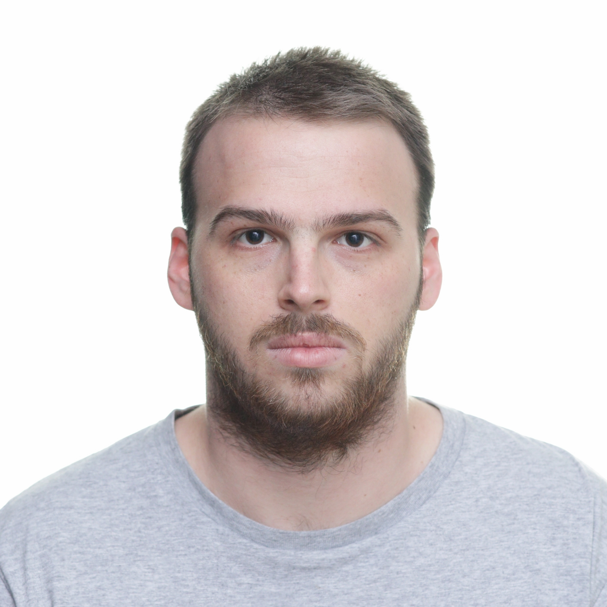
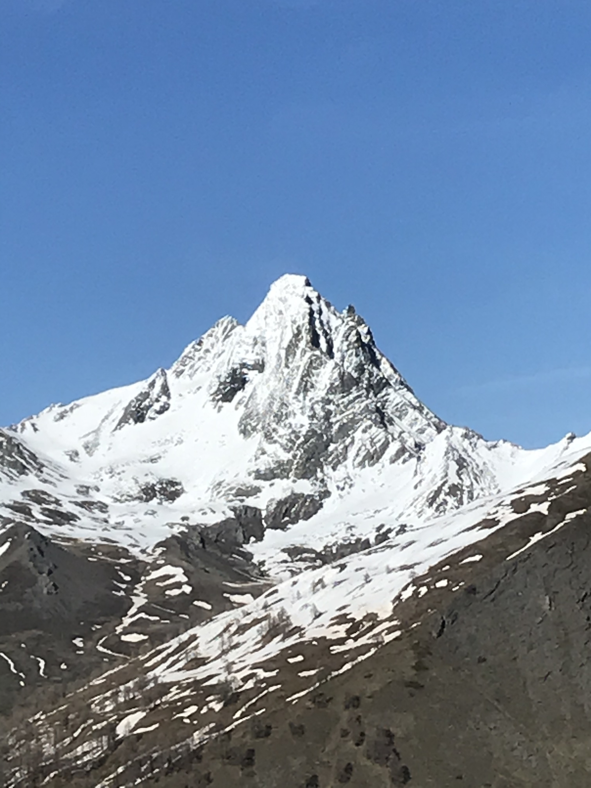

Timothée Bonnefoi
Department of Mathematics
Universiteit Antwerpen
1 Middelheimlaan
2020 Antwerp, Belgium
<first name>.<surname>
@uantwerpen.be
I am in the final year of my PhD at the Universiteit of Antwerpen under the supervision of Wendy Lowen and Arne Mertens. Have a look at CV (pdf) or my Research statement.
For my thesis I have developped a formal theory of toposes in some sufficiently nice 2-categories.
My research interests center around category theory and include topos theory, formal category theory as well as the links with logic and type theory. My long term goal is to apply toposes to physics and complex systems.
